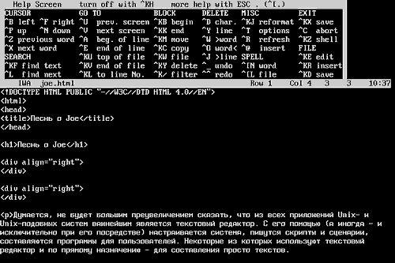
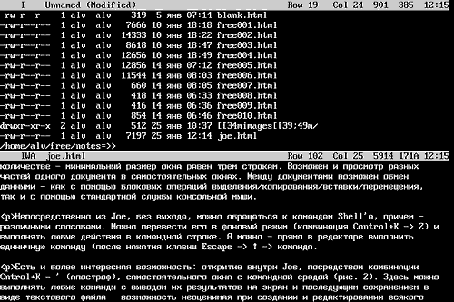

Песнь о Joe
Автор: Алексей Федорчук,
[email protected]Опубликовано:
05.03.2002
Оригинал: http://www.softerra.ru/freeos/16431/
Думается, не будет большим преувеличением
сказать, что из всех приложений Unix- и Unix-подобных систем важнейшим является
текстовый редактор. С его помощью (а иногда — и исключительно при его
посредстве) настраивается система, пишутся скрипты и сценарии, составляются
программы для пользователей. Некоторые из которых используют текстовый редактор
и по прямому назначению — для составления просто текстов.
И не случайно текстовые редакторы среди
Unix-пользователей стали чуть ли не предметом религиозных войн. Немало копий (и
клавиатур) было сломано вокруг темы emacs vs. vi, сопоставимой по накалу
страстей только с антитезой «мастдай» — «банзай».
Действительно, оба гиганта мира текстовых
редакторов, и vi (вернее, его современное воплощение — Vim), и
(особенно) Emacs по своим функциональным возможностям далеко вышли за рамки
программ этого класса [1]. Они подробно
описываются в любой толстой книге про Unix/Linux, им посвящена многочисленная
специальная литература, существуют тематические сайты и конференции, где
обсуждаются детали конфигурирования этих редакторов и различные аспекты их
применения.
Однако в дыму этих баталий затерялись иные
представители славного клана редакторов. И один из них — скромный
труженик Joe. Он не претендует, как Emacs, на роль операционной среды, не
покидая которую, можно получать и отправлять почту, просматривать новости и
web-страницы, составлять программы и верстать в TeX'е. В отличие от Vim, не
рассчитывает он и на признание в качестве универсальной среды программирования
на любых изобретенных человечеством языках. Однако он честно выполняет свой долг
на ниве сочинения повествовательных текстов, особенно если они требуют
некоторого оформления.
Обоснованию этого я и посвящаю свою заметку.
Однако прежде — пара слов о том, каким видится идеальный текстовый
редактор [2]. Перво-наперво
не худо, если он позволяет вводить текст и осуществлять навигацию по нему,
желательно — простым и интуитивно понятным способом. Далее, требуются
возможности собственно редактирования — выделения, копирования,
вставки, перемещения текстовых фрагментов любого объема. И
желательно — в нескольких одновременно открытых документах.
Затем — функции поиска и замены, в том числе — и
многострочных фрагментов. Наконец, для полного счастья — средства
автоматизации, то есть встроенный язык макросов/скриптов/сценариев.
Причем — достаточно простой в освоении и использовании, во-первых [3]. А во-вторых,
чтобы эти самые макросы/скрипты/сценарии можно было бы при необходимости слепить
на скорую руку, а уж потом доводить до кондиции по потребностям. Иными
словами — требуется средство протоколирования действий
пользователя.
Так вот, если обратиться к Joe — то
все это в нем есть. Более того, его средства представляют собой разумный
компромисс между функциональным богатством Vim и простотой ee. Он не сложней в
освоении, чем редакторы типа le или mcedit, обеспечивая, при минимальном навыке,
много большую скорость обработки текста [4].
Однако некоторые усилия на изучение Joe
затратить все же необходимо [5]. И первое, что
тут требуется уяснить совершенно четко — Joe есть типичный
представитель семейства командных редакторов. То есть все действия по
редактированию текста осуществляются соответствующими встроенными командами, к
которым привязаны комбинации клавиш. В сущности, это — макросы на
собственном языке Joe. И, с одной стороны, система команд может быть сколь
угодно наращена, с другой — клавишные комбинации для них могут быть
переопределены произвольным образом.
Последнее, впрочем — не нужно:
структура предопределенных по умолчанию клавишных команд проста и логична. За
простыми и частыми действиями для навигации и редактирования закреплены
двухклавишные комбинации — как правило, Control
(изредка — Escape) плюс литера (последняя — обычно с
мнемоническим смыслом). Для более сложных или редких действий (например,
операций с блоками) используются трехклавишные комбинации — Control+K
с последующей литерной.
Все клавишные комбинации не чувствительны к
регистру и (что особенно важно в наших условиях) — к раскладке
клавиатуры (латиница/кириллица, например). Единственное усилие для трехклавишных
комбинаций — дополнительное нажатие Control'а одновременно с литерной
при русской раскладке.
Я не буду останавливаться на описании
клавиатурных команд — исчерпывающую справку по ним можно получить из
Help-системы, выводимой на экран комбинацией Control+K -> H (рис. 1).
Посмотрим лучше на другие возможности Joe.

Рисунок 1. Редактор Joe с системой
помощи
Это — многозадачный редактор,
количество одновременно открытых документов лимитируется только ресурсами
машины. Причем они одновременно могут просматриваться в отдельном окне. Правда,
только горизонтально ориентированном, и в ограниченном
количестве — минимальный размер окна равен трем строкам. Возможен и
просмотр разных частей одного документа в самостоятельных окнах. Обмен данными
между документами — как операциями
выделения/копирования/вставки/перемещения блоков, так и с помощью стандартной
службы консольной мыши.
Непосредственно из Joe, без выхода, можно
обращаться к командам Shell'а, причем — различными способами. Можно
перевести его в фоновый режим (комбинация Control+K -> Z) и выполнять любые
действия в командной строке. А можно — прямо в редакторе выполнить
единичную команду (после нажатия клавиш Escape -> ! -> команда.
Есть и более интересная возможность: открытие
внутри Joe, посредством комбинации Control+K — ' (апостроф),
самостоятельного окна с полноценной командной средой (рис. 2). Здесь можно
выполнять любые команды с выводом их результатов на экран и последующим
сохранением в виде текстового файла: неоценимо как при создании всякого рода
скриптов, так и при файловых операциях.

Рисунок 2. Редактор Joe с окном командной
среды
Если штатных возможностей редактора Joe
оказывается недостаточно, их можно нарастить с помощью внутреннего языка
макрокоманд. При этом изучать его для начала не
обязательно — достаточно включить режим протоколирования (комбинацией
клавиш Control+K -> [), выполнить интерактивно все требуемые действия и
присвоить созданному макросу номер (от 0 до 9), который и используется для его
воспроизведения (комбинацией Control+K -> #).
Далее, раз запротоколированные макрокоманды
можно сохранить для на века. Для чего их следует просто поместить в
соответствующую секцию конфигурационного файла (~/.joerc) и закрепить за каждым
любую свободную клавишу или их комбинацию. Таким образом можно легко
автоматизировать процесс ввода тэгов HTML или XML, конструкций JavaScript,
скриптов командной среды, разметки документов TeX, а также всего, что
потребуется впредь. Превратив Joe в специализированный инструмент для решения
почти любых задач.
Если добавить, что глобальные опции Joe
(переносы слов, автоматические отступы, условия маркирования блоков и многое
другое) могут быть установлены ключами при его запуске, настроены интерактивно
во время сеанса или заданы раз и навсегда в конфигурационном файле
(причем — для разных типов документов по разному), вывод становится
очевидным: он отличается близким к оптимальному соотношением простоты,
функциональности и настраиваемости. Благодаря чему его можно найти в любом
дистрибутиве Linux, в виде порта или пакета для FreeBSD или OpenBSD (имеются
даже DOS- и Windows-версии). Я же, со своей стороны, беру на себя смелость
рекомендовать его всем любителям работы в текстовом режиме, буде до сего времени
они не приобрели иных пристрастий.
Вниманию вебмастеров: использование данной статьи возможно
только в соответствии
с правилами использования
материалов сайта «Софтерра»
(http://www.softerra.ru/site/rules/)